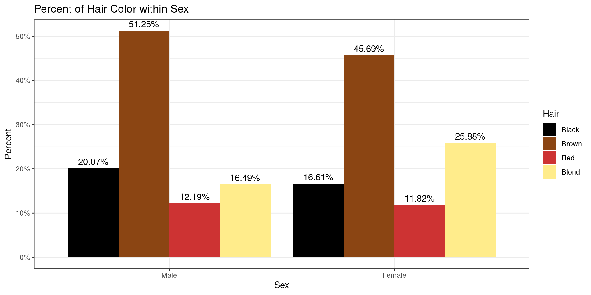
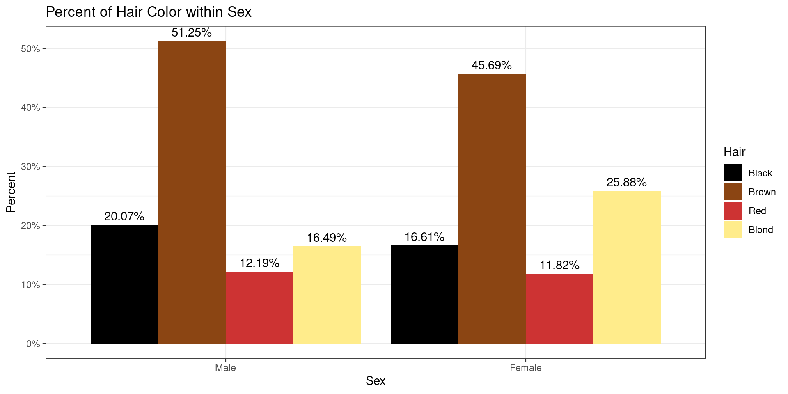
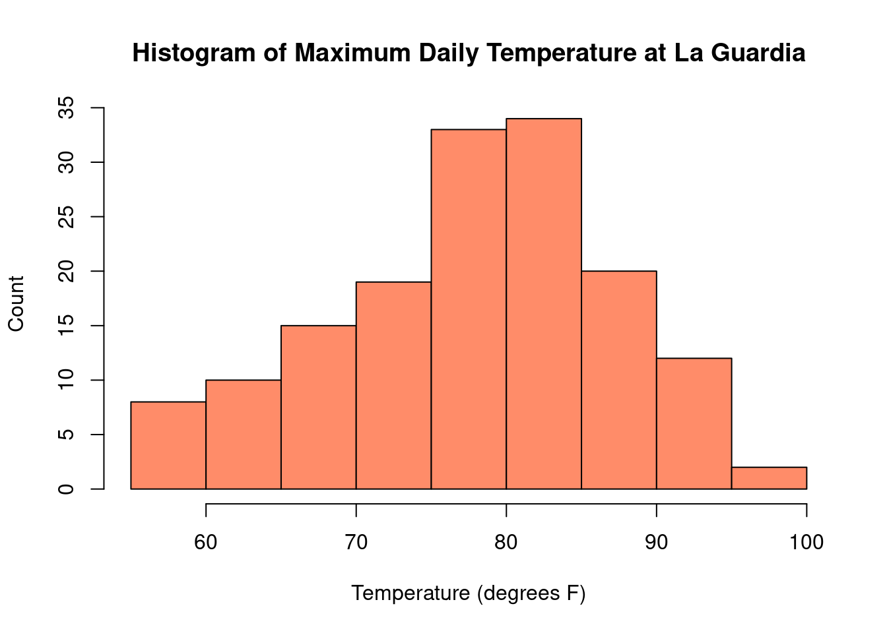
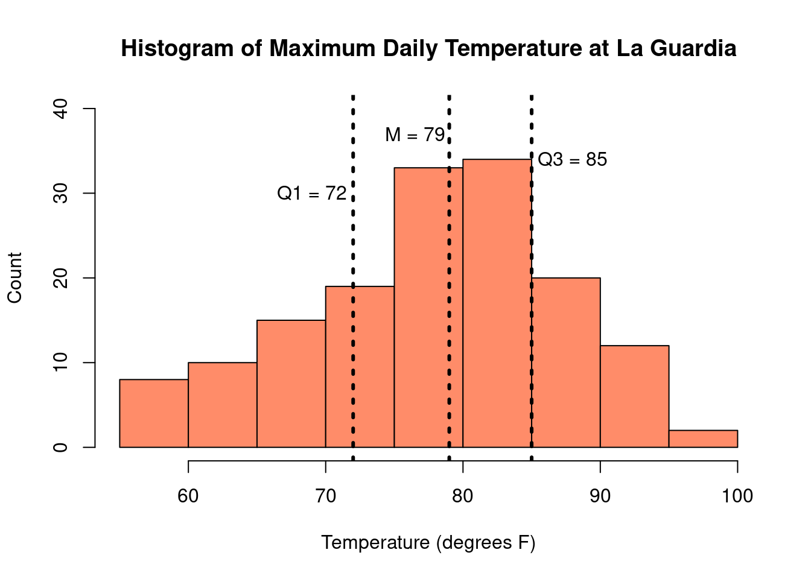
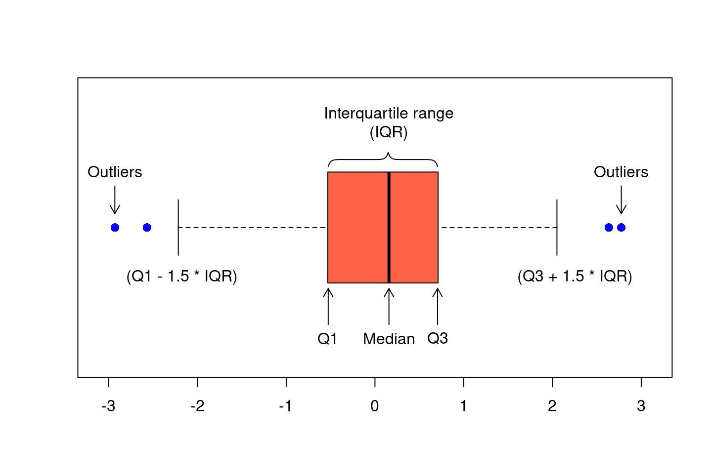
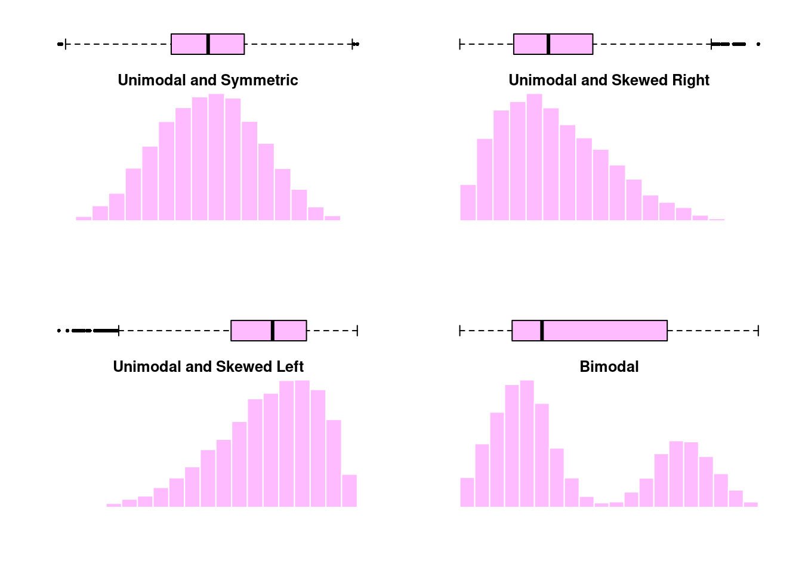
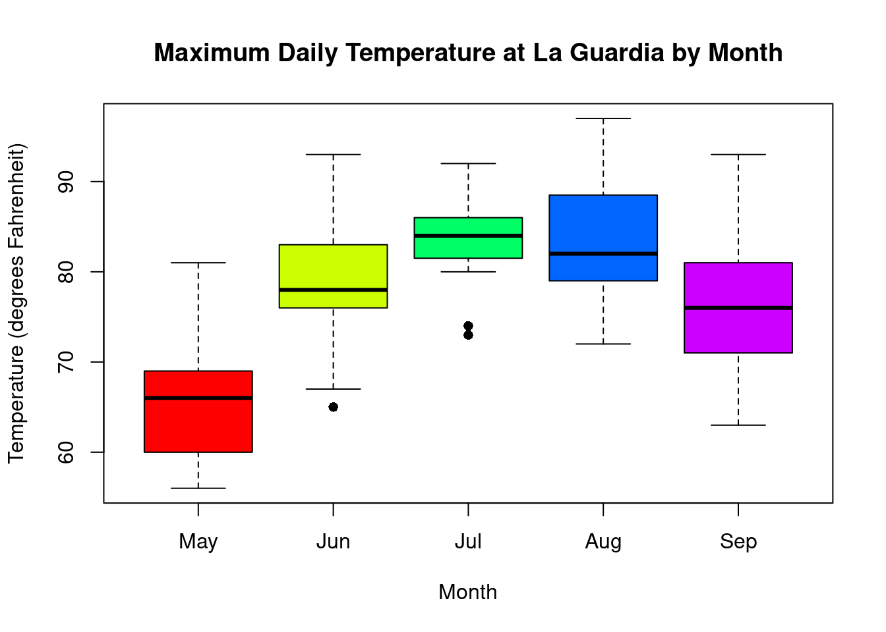
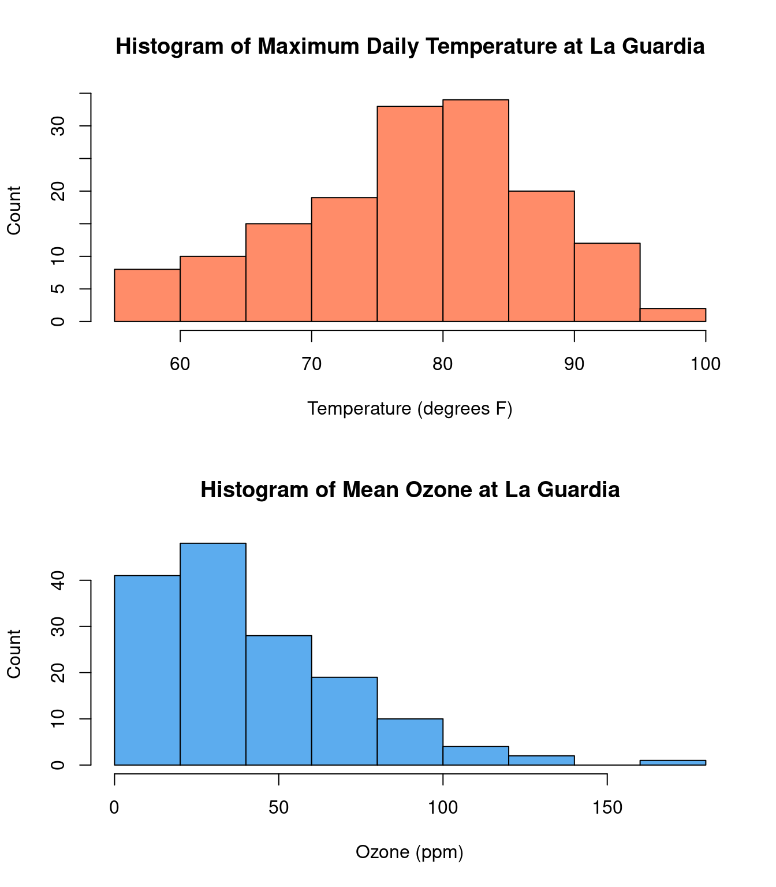
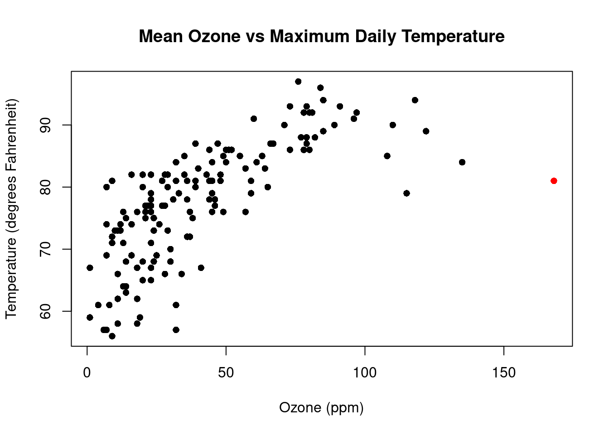
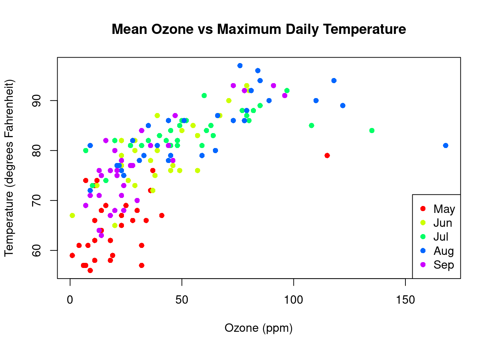

2 Data Summaries and Presentation
“Numerical quantities focus on expected values, graphical summaries on unexpected values.”
— John Tukey
- Define data and categorize and identify different types of data
- Understand and calculate numerical summaries of different data types
- Learn about different types of graphs and how they can be interpreted
2.1 Introduction to Data
Data can be virtually anything that is observed and recorded, including how tall you are, the color of all the cars in a town, or the time it takes to drive to work. Just as the different types of data can vary considerably, so can the amount. There is a natural tension between the quantity of data available and our abilities to make sense of it. It is difficult to sort through large streams of data and make any meaningful conclusions. Instead, we can better understand data by condensing it into human readable mediums through the use of data summaries, often displayed in the forms of tables and figures. However, in doing so, information is often be lost in the process. A good data summary will seek to strike a balance between clarity and completeness of information. The focus of this chapter will be on descriptive statistics, utilizing both numerical and graphical summaries of various types of data.
The optimal summary and presentation of data depends on the data’s type. There are two broad types of data that we may see in the wild, which we will call categorical data and continuous data. As the name suggests, categorical data (sometimes called qualitative or discrete data) are data that fall into distinct categories. Categorical data can further be classified into two distinct types:
- Nominal data: data that exists without any sort of natural or apparent ordering,
e.g., colors (red, green, blue), gender (male, female), and type of motor vehicle (car, truck, SUV).
- Ordinal data: data that does have a natural ordering, e.g., education (high school, some college, college) and injury severity (low, medium, high)
Continuous data (sometimes called quantitative data), on the other hand, are data that can take on any numeric value on some interval or on a continuum. Examples of continuous data include height, weight, and temperature. Categorical and continuous data are summarized differently, and we’ll explore a number of ways to summarize both types of data.
Categorical data: Data that takes on a distinct value (i.e., falls into categories)
Continuous data: Data that takes on numeric values
Nominal data: A type of categorical data where the categories do not have any apparent ordering
Ordinal data: A type of categorical data where there is a natural ordering
2.2 Categorical Data
2.2.1 Basic Categorical Summaries
Let’s begin by considering a dataset of survey responses for 592 students responding with their sex, hair color, and eye color. This data includes responses from male and female students, with hair colors that are black, brown, red, or blond, and eyes that are brown, blue, hazel, or green. Note that these are qualitative measures, suggesting that are dealing with categorical data. Let’s take a look at the data for the first 10 subjects.
| SubjectID | Sex | Hair | Eye |
|---|---|---|---|
| 1 | Male | Brown | Blue |
| 2 | Female | Blond | Blue |
| 3 | Female | Blond | Blue |
| 4 | Female | Black | Brown |
| 5 | Male | Red | Green |
| 6 | Male | Blond | Blue |
| 7 | Female | Black | Brown |
| 8 | Male | Blond | Green |
| 9 | Female | Blond | Blue |
| 10 | Female | Brown | Brown |
Each row indicates a subject possessing the indicated sex, hair, and eye color. For example, the first row indicates a male with brown hair and blue eyes. Trying to make sense of 592 such observations is a daunting task, so we can begin by taking the data we have and summarizing it in a useful way. For categorical data, like we have here, summarizing the data is pretty straightforward - you just count how many times each category occurs. For example, we can count how many of each hair color was observed in our data.
| Black | Brown | Red | Blond |
|---|---|---|---|
| 108 | 286 | 71 | 127 |
This kind of counting is known as absolute frequency, which gives us a single value indicating the total number of observations. In looking at the table above, it is clear that there are far more observations with brown hair than black, blond, and red. We gather this information by looking at the total number of observations with brown hair, and noticing that this number is quite a bit larger than any of the other observations.
However, suppose somebody asks you how common brown hair is relative to other colors. Does it make sense to respond, “Oh, there are 286 individuals with brown hair?” Without knowing the values for the other hair colors, this number alone doesn’t carry much meaning. Is 286 observations a lot? It depends. Were 300 people examined? 3,000? Without knowing anything about the rest of the data, the absolute frequency may not be very useful.
In addition to actual counts of observations in categorical data, we may often be interested in rates. A rate can be as simple as taking the total number of a single category observed, and stating it in terms of the total number of observations. For example, instead of saying, “286 subjects who were observed had brown hair,” we might instead say, “286 of 592 subjects surveyed had brown hair.” Rates are also known as relative frequencies, because they are relative to a specific number of observations. More commonly, we use percentages, also known as proportions, which are a special type of rate/ relative frequency - the count per 100 observations. We calculate percentages using division. That is, 286 of 592 subjects becomes \(286/592 = 0.4831 = 48.31\%\). We can now show the same table above, this time in terms of percentages.
| Black | Brown | Red | Blond |
|---|---|---|---|
| 18.2% | 48.3% | 12.0% | 21.5% |
By considering all observations as rates per one hundred, we can quickly compare the relative counts of our observations. For example, we can quickly note that about half of the observations collected had brown hair, and almost twice as many had blond hair compared to red.
In addition to tables, we can also summarize categorical data visually. The most common figure used to represent categorical data is the bar plot. Below is a demonstration of a bar plot for the percentages of hair color in our data.

2.2.2 Advanced Categorical Summaries
Numerical and visual summaries become even more useful as our data becomes more complicated. Let’s continue with the data we’ve been using, but now let us also break down observations with each hair color by sex as well. This process is known as stratification.
| Male | Female | Total | |
|---|---|---|---|
| Black | 56 | 52 | 108 |
| Brown | 143 | 143 | 286 |
| Red | 34 | 37 | 71 |
| Blond | 46 | 81 | 127 |
| Total | 279 | 313 | 592 |
First, we notice that by taking sums across the rows, we arrive at the same numbers that we had when only hair color was considered. If we sum vertically down the columns, we also get the total number of observations of each sex. Note that the sum of both margin totals add up to 592, the total number of observations, as indicated by the bottom right corner. In other words, y stratifying the hair color counts by sex, we haven’t lost any information related to the hair color, but we have added information to our summary about sex.
Getting stratified counts is straightforward, however, we now have several ways in which we might compute the percentages. For the table above, there are three ways we could compute percents.
- How many in each category, relative to the entire sample
| Male | Female | |
|---|---|---|
| Black | 9.5% | 8.8% |
| Brown | 24.2% | 24.2% |
| Red | 5.7% | 6.2% |
| Blond | 7.8% | 13.7% |
Here, the percentages are computed by diving the count in each inner cell by the total sample size, 592. For example, there were 56 male respondents with black hair. Relative to the total sample, this means 56/592 = 0.095 = 9.5% of the sample consists of black-haired males. Adding up all of the percentages gives us \(\approx\) 100% (due to rounding to the first decimal place we actually get 100.1% here).
- How many of each hair color, within sex
| Male | Female | |
|---|---|---|
| Black | 20.1% | 16.6% |
| Brown | 51.3% | 45.7% |
| Red | 12.2% | 11.8% |
| Blond | 16.5% | 25.9% |
| Total | 100.0% | 100.0% |
Now our table looks very different. The percentages in the inner cells to not add up to 100%. Instead, the percentages have been computed relative to the total number of respondents in each sex. For example, we still have 56 male subjects with black hair, but relative to the total number of male subjects (279), this is 56/279 = 0.201 = 20.1%. There are 52 black-haired female respondents out of 313 total females, which gives us 53/313 = 0.166 = 16.6%. Since the percentages are computed relative to sex, we now see the percentages in each column add up to 100%. In other words, we have information about distribution of hair colors within sex.
- How many in each sex, within hair color
| Male | Female | Total | |
|---|---|---|---|
| Black | 51.9% | 48.1% | 100.0% |
| Brown | 50.0% | 50.0% | 100.0% |
| Red | 47.9% | 52.1% | 100.0% |
| Blond | 36.2% | 63.8% | 100.0% |
Similarly, we can also look at the relative frequencies of each sex within the four hair color categories. We have 56 black-haired males and 52 black-haired females, so 56/108 = 0.519 = 51.9% of the black-haired respondents are male and 53/108 = 0.481 = 48.1% are female. Since hair color is given in the rows of our table, we now have percentages that add up to 100% in each row.
All three of these tables are correct and informative. When deciding the best way to calculate percentages for tables like this, it will depend on the research question and the data at hand. We can also use stratification graphically, by creating multiple bar plots for each category of the stratification variable.
 

Absolute frequency: The number of observations in a category
Rate/Relative frequency: The number of observations in a category relative to any other quantity
Percent/Proportion: The number of observations per 100
Bar plot: Visualization of categorical data which uses bars to represent each category, with counts or percents giving the height of each bar
Stratification: The process of sorting data into categories prior to summarizing
2.3 Continuous Data
To explore graphical and numerical summaries of continuous data, let’s consider a dataset which contains daily air quality measurements in New York from May to September 1973. Let’s look at the first 10 rows of the data:
| Month | Day | Temp | Wind | Ozone |
|---|---|---|---|---|
| 5 | 1 | 67 | 7.4 | 41 |
| 5 | 2 | 72 | 8.0 | 36 |
| 5 | 3 | 74 | 12.6 | 12 |
| 5 | 4 | 62 | 11.5 | 18 |
| 5 | 5 | 56 | 14.3 | 9 |
| 5 | 6 | 66 | 14.9 | 28 |
| 5 | 7 | 65 | 8.6 | 23 |
| 5 | 8 | 59 | 13.8 | 19 |
| 5 | 9 | 61 | 20.1 | 8 |
| 5 | 10 | 69 | 8.6 | 25 |
This data contains continuous measurements on the air quality:
- maximum daily temperature in degrees Fahrenheit at La Guardia Airport (Temp)
- average wind speed in miles per hour (mph) at La Guardia Airport (Wind)
- average ozone in parts per billion (ppb) from 1:00pm - 3:00pm at Roosevelt Island (Ozone)
The tables and bar charts we introduced in Section @ref(ch2_s2) are great summaries when the data can be categorized and counted. However, with continuous data, we can have a potentially infinite number of values and counting each unique value would not be very informative. Instead, one way we can visualize the data is by first creating bins which cover an interval of possible values and then counting the number of observations that fall into each bin. Plotting the absolute or relative frequency of observations in each bin gives us a histogram. A histogram of the maximum daily temperature from our New York data looks like this:

Histograms provide a nice picture of the distribution of the observed data. In the histogram of temperature, we can readily see that on most days between May and September, the maximum temperature at La Guardia was between 75 - 85 degrees. Some days were particularly chilly, with temperatures below 60 degrees and some days were quite hot, with temperatures above 90 degrees. When creating a histogram, it is important to be careful in selecting the size of each bin. Bins that are too large can over-simplify the data, but bins that are too small can make the figure unnecessarily complex.

Histograms can come in a variety of shapes and are often described by the number of peaks shown and by their skewness. In our temperature histogram, we see only one peak, so we call the distribution unimodal. When there are two peaks, we say the distribution is bimodal, and for any number of peaks of three or more, we call the histogram multimodal. Looking at the histogram of temperature, we also see that the observed temperatures are fairly evenly distributed around the peak. When a histogram has equal tails on both sides of the peak, it is considered to be symmetric. Otherwise, the histogram is considered to be skewed. We can further describe the skew by the side of the histogram with a longer tail - if there is a large tail to the right of the histogram we call it skewed right and if there is a large tail to the left of the histogram we call it skewed left. Let’s look at a few different histogram shapes to illustrate these definitions.

While nothing can replace a picture, sometimes it is preferable to summarize our data with one or two numbers which characterize the most important information about the distribution. Often, we are most interested in the location of the peak (center) and how spread out the data is around that peak. There are two popular methods to describe the center of a distribution:
- Mean
- Median
The mean is the most commonly used measure of the center of a distribution. Simply enough, the mean is found by taking the sum of all of the observations, and dividing by the total number. With \(n\) observations, \(x_1, x_2, ..., x_n\), we can express the mean, denoted as \(\bar{x}\) (x-bar), mathematically in the following way:
\[ \bar{x} = \frac{x_1 + x_2 + \dots + x_n}{n} = \frac1n \sum_{i=1}^n x_i \] The median is another common measure of the center of a distribution. In particular, for a set of observations, the median is an observed value that is both larger than half of the observations, as well as smaller than half of the observations. Formally, we say that the median is the 50th percentile of the data. Informally, we say it’s the middle value. To find the median, we begin by arranging our data from smallest to largest. If the total number of observations, \(n\), is odd, then the median is simply the middle observation. If \(n\) is even, it is the mean of the middle two.
Examples:
- \(1, 2, 2, 3, {\color{red} 5}, 7, 9, 10, 11 \quad \Rightarrow \quad \text{Median} = 5\)
- \(1,2,2,3, {\color{red} 5}, {\color{red} 6}, 7, 9, 10, 11, \quad \Rightarrow \quad \text{Median} = \frac{(5+6)}{2} = 5.5\)
For the New York temperature data, the mean is 77.9 \(^{\circ}\)F and the median is 79 \(^{\circ}\)F. These values are very similar to each other and fall near the peak in the histogram.

However, it is not always the case that the mean and median will be similar. Let’s consider an example where we collect \(n = 10\) samples of salaries for University of Iowa employees:
| $31,176 | $130,000 |
| $50,879 | $37,876 |
| $34,619 | $144,600 |
| $103,000 | $48,962 |
| $36,549 | $5,075,000 |
For our sample, we find that the mean is $569,266, but the median is (48,962 + 50,879) / 2 = $49,921. It turns out, our sample included the highest paid university employee - the head football coach. This extremely high salary has caused the mean to be very large - larger than 9/10 of the salaries in our sample. On the other hand, the median is not impacted by the football coach’s salary and is thus a much better reflection of the typically University employee’s salary.
This one high salary, which is not representative of most of the salaries collected, is known as an outlier. From the example above, we have seen that the mean is highly sensitive to the presence of outliers, while the median is not. Measures that are not sensitive to outliers are known as robust. We see, then, that the median is a robust estimator of the center of the data.
We have seen an example where the mean and median are quite close, and an example where they are wildly different. This begs the broader question - when might we expect these measures of central tendency to be the same, and when might we expect them to differ?

When the data is unimodal and symmetric, the mean and median are indistinguishable. However, when there is skew or multiple peaks, we see the mean and median start to differ. When the distribution is skewed, the mean is pulled towards the tail. On the other hand, the number of very large/small observations is relatively small, so the median remains closer to the peak where the majority of data lies. When the distribution is bimodal, neither the mean or median can summarize the distribution well. In that case, it might be better to characterize the center of each peak individually.
In addition to measuring the center of the distribution, we are also interested in the spread or dispersion of the data. Two distributions could have the same mean and median, but that does not guarantee that they have the same shape. For example, consider the two distributions of data shown below. Each distribution represents a sample of 1,000 observations with mean of 100.

From the histograms above, we visually confirm that both data distributions have peaks centered around 100. Despite this, these data are not quite as similar as one might have thought. For the data on the left, nearly all of the values fall in the range of (50, 150), while for the second distribution, this range appears to be closer to (0, 200). We know each set of data contains the same number of observations, but the first distribution is much more concentrated around the mean. On the other hand, the second distribution is much flatter and more spread out. In order to more accurately capture these differences, we need a second numerical summary which describes the degree of spread or variability in each set of data. There are several measures which are commonly used for this purpose:
- Variance
- Standard deviation
- Interquartile Range (IQR)
The variance and the standard deviation are numerical summaries which quantify how spread out the distribution is around its mean. This is done by calculating how far away each observation is from the mean, squaring that difference, and then taking an average over all observations. For a sample of \(n\) observations \(x_1, x_2, ..., x_n\), the variance, denoted by \(s^2\), is calculated as:
\[ s^2 = \frac{1}{n-1} \sum_{i=1}^n (x_i - \bar{x})^2 \]
The standard deviation, denoted by \(s\), is a function of the variance. Specifically, it is the square root of the variance \(s = \sqrt{s^2}\). Because the variance uses the squared differences between each observation and the mean, its units are the square of the units of the original data. For example, the New York temperature measurements have a mean of 77.9 \(^{\circ}\)F and a variance of 89.6 \(^{\circ}\)F\(^2\). The standard deviation takes the square root, which puts the units back on the original scale. For the temperature data, the standard deviation is 9.5 \(^{\circ}\)F. Because of this, the standard deviation is often preferred as a measure of spread over the variance, although if you know the variance you can compute the standard deviation (by taking the square root) and vice versa.
The applet below is designed to help illustrate the properties of the mean and standard deviation. You can vary the mean between -10 and 10 and the standard deviation between 1 and 20. The histogram on the right displays the unimodal and symmetric distribution of data with the specified mean and standard deviation.
- Set the standard deviation to 8 and use the slider to vary the mean of the distribution. What properties of the histogram change as the mean is varied? What stays the same?
- Now, set the mean to 0 and vary the standard deviation. What properties of the histogram change as the standard deviation is varied? What stays the same?
-
Let’s examine more closely how the standard deviation affects the distribution
of data. Keep the mean at 0, and set the standard deviation to 4, 8, 12, 16,
and 20.
- For each standard deviation, fill out the following table with the approximate minimum and maximum values of the data.
- What do you notice about the relationship between the standard deviation and the minimum/maximum values observed in the data? Is there any noticeable pattern in your table?
Standard deviation Minimum and maximum 4 8 12 16 20
The variance and standard deviation measure the spread of the data around the mean. Therefore, these summaries should only be used when the mean is chosen to reflect the data. We learned previously that the mean is a good measure of the center of data that has a unimodal and symmetric distribution, but when the distribution is skewed, the median is more accurate. In general, when data is skewed and not accurately summarized with the mean and standard deviation, we often turn to percentile-based summaries. Formally, the \(p\)th percentile is a value \(V_p\) such that
- \(p\%\) of observations are below \(V_p\)
- \((100 - p)\%\) of observations are greater than \(V_p\)
More informally, percentiles quantify where observations fall, relative to all the other observations in the data.
Suppose, that we are looking for the \(20\)th percentile of the (already sorted) sample below. The 20th percentile will be the number such that it is greater than or equal to 20% of the data, but smaller than the remaining 80%.
\[ 2,\ 3,\ 5,\ 5\ ,\ 6 ,\ 7,\ 10,\ 23,\ 26,\ 28. \]
For this sample of 10 observations, the \(20\)th percentile would be 3, as 20% of the observations \(\{2, \ 3\}\) are less than or equal to it, while the remaining 80%, \(\{5,\ 5\ ,\ 6 ,\ 7,\ 10,\ 23,\ 26,\ 28 \}\) are greater than it.
As you can imagine, this definition can get a little complicated when we have small sample sizes or tied values. With 10 observations, it is straightforward to discuss percentiles that are multiples of 10 (e.g., 10th, 20th, etc.), but what about the 28th percentile? Additionally, in our sample there are two observations with the value 5. Does this mean 5 is the 30th percentile or the 40th? There are a number of different methods for defining and calculating percentiles in these more complicated cases, but for the intent of this book, we will focus more on the conceptual interpretation of the percentile, rather than it’s precise definition.
There are a number of specific percentiles that are especially useful to us. For example, we have already seen the median, which can also be referred to as the \(50\)th percentile of a dataset. In addition to the median, we are also often interested in determining the \(25\)th and \(75\)th percentile as well. These three percentiles make up the quartiles of the data, denoted
\[ \begin{align*} Q_1 &= 25^{th} \text{ percentile} = 1^{st} \text{ or lower quartile} \\ Q_2 &= 50^{th} \text{ percentile} = 2^{nd} \text{quartile or median} \\ Q_3 &= 75^{th} \text{ percentile} = 3^{rd} \text{ or upper quartile} \end{align*} \] We know the median \(M\), is the value such that 50% of observations are less than it and 50% are greater than it. \(Q_1\) can be said to represent the median of the smaller 50% of all observations, while \(Q_3\) can be said to be the median of larger 50%. In other words, 25% of the data is below \(Q_1\), 25% of the data is between \(Q_1\) and \(M\), 25% of the data is between \(M\) and \(Q_3\), and the remaining 25% of the data is larger than \(Q_3\).
A commonly used percentile-based measure of spread is the interquartile range (IQR), defined as
\[\text{IRQ} = Q_3 - Q_1\]
Because it is the difference between the upper and lower quartile, it represents the distance covering the middle 50% of the data. We may also report the range as an interval as \((Q_1, Q_3)\). For the New York temperature data, \(Q_1 = 72\), \(Q_3 = 85\), and the median is 79. The IQR is therefore \(85 - 72 = 13\) and tells us that 50% of the days between May and September had temperatures between 72\(^{\circ}\)F and 85\(^{\circ}\)F.

The IQR is not impacted by the presence of outliers, so it is considered a robust measure of the spread of the data. As mentioned previously, the standard deviation is based on the mean. Since the mean is not a robust summary, neither is the standard deviation. This tells us that for unimodal and symmetric data, the choice between the mean/standard deviation and the median/IQR is only a matter of personal preference. However, when the data is skewed or has large outliers, robust summaries are preferred, meaning that the median/IQR will be a better representation of the data.
Percentiles are also used to create another common visual representation of continuous data: the boxplot, also known as a box-and-whisker plot. A boxplot consist of the following elements:
- A box, indicating the Interquartile Range (IQR), bounded by the values \(Q_1\) and \(Q_3\)
- The median, or \(Q_2\), represented by the line drawn within the box
- The “whiskers,” extending out of the box, which can be defined in a number of ways. Commonly, the whiskers are 1.5 times the length of the IQR from either \(Q_1\) or \(Q_3\).
- Outliers, presented as small circles or dots, and are values in the data that are not present within the bounds set by either the box or whiskers.

Just like histograms, boxplots can also illustrate the skew of a data. In a histogram, the skewed was named after the location of the tail and in a boxplot, this corresponds to the side with a longer whisker. Here we can see histograms and boxplots for various distributions of data.

Histogram: Visualization of continuous data which divides the continuous variable into bins and plots the number of observations in each bin
Unimodal: Characterization of a distribution with one peak
Bimodal: Characterization of a distribution with two peaks
Multimodal: Characterization of a distribution with three or more peaks
Symmetric: Characterization of a distribution with equal tails on both
sides of the peak
Skewed right: Characterization of a distribution with a large tail to the right of the peak
Skewed left: Characterization of a distribution with a large tail to the left of the peak
Mean: The average value, denoted \(\bar{x}\) and computed as the sum of the observations divided by the number of obervations
Median: The middle value or 50th percentile, the value such that half the observations lie below it and half above
Outlier: Extreme observations that fall far away from the rest of the data
Robust: Measures that are not sensitive to outliers
Variance: The average of the squared differences between each data value and the mean, denoted \(s^2\)
Standard deviation: The square root of the variance, denoted \(s\)
Interquartile range (IQR): The middle 50% of the data, the difference between the upper and lower quartiles
Boxplot/box-and-whisker plot: Visualization of continuous data which is based on percentiles
2.4 Advanced Data Visualizations
As we saw in the last section, histograms and boxplots are useful when describing the distribution of one continuous measurement. What if we have both categorical and continuous measurements or multiple continuous measurements? Let’s return to the New York air quality data:
| Month | Day | Temp | Wind | Ozone |
|---|---|---|---|---|
| 5 | 1 | 67 | 7.4 | 41 |
| 5 | 2 | 72 | 8.0 | 36 |
| 5 | 3 | 74 | 12.6 | 12 |
| 5 | 4 | 62 | 11.5 | 18 |
| 5 | 5 | 56 | 14.3 | 9 |
| 5 | 6 | 66 | 14.9 | 28 |
| 5 | 7 | 65 | 8.6 | 23 |
| 5 | 8 | 59 | 13.8 | 19 |
| 5 | 9 | 61 | 20.1 | 8 |
| 5 | 10 | 69 | 8.6 | 25 |
One thing we might be interested in is the distribution of temperatures in each month. Month can be considered an ordinal categorical variable, and temperature is continuous. When we want to see the distribution of a continuous variable across multiple categories, we can look at side-by-side boxplots.

By putting all of the boxplots next to each other with the same temperature range, we can quickly detect trends and differences in temperature in the five months. Median temperature peaks in July/August and is lowest in May. Temperatures in May and September are more variable, whereas the range of temperatures in July is less spread out. There is some overlap between all of these boxplots, which means that although July and August have higher temperatures more often, there are days in the other months that are just as hot or days in July that are cooler.
Now, let’s consider the case where we have two continuous variables. Our first step may be to look at the distribution of each variable separately. For example, we can visualize the distribution of both temperature and ozone in the New York air quality data, using histograms or boxplots.

While temperature is unimodal and symmetric in distribution, the ozone concentration measurements are skewed right. These plots are useful, but do not provide any information about the relationship between temperature and ozone concentration, which we may expect to be related.
To look at the relationship between two continuous variables, a common visualization is the scatter plot. A scatter plot is a two-dimensional plot of data pairs. One variable is represented on the x-axis, which is the horizontal range of the plot. The other variable is represented on the y-axis which is the vertical range of the plot. Each dot on a scatter plot represent one observation. In the plot below, we have put the mean ozone on the x-axis and temperature on the y-axis. Each dot represents one day between May and September. For example, on August 25th, the maximum temperature was 81 \(^\circ\)F, and the mean ozone concentration was 168ppm. This day is colored red on the scatter plot.

We see that there is a distinct relationship between ozone concentration and temperature. Higher temperatures tend to occur simultaneously with higher ozone concentrations, and lower temperatures tend to occur simultaneously with lower ozone concentrations. The scatter plot is able to illustrate an important relationship that wouldn’t be detectable just by looking at histograms of each variable separately.
We may further describe our data by including a third categorical variable. In our scatter plot of ozone and temperature, we could also color the points by the month on which they occurred.

Scatter plot: Visualization of two continuous measures which uses dots to represent each data pair
x-axis: The horizontal axis of a two-dimensional plot
y-axis: The vertical axis of a two-dimensional plot